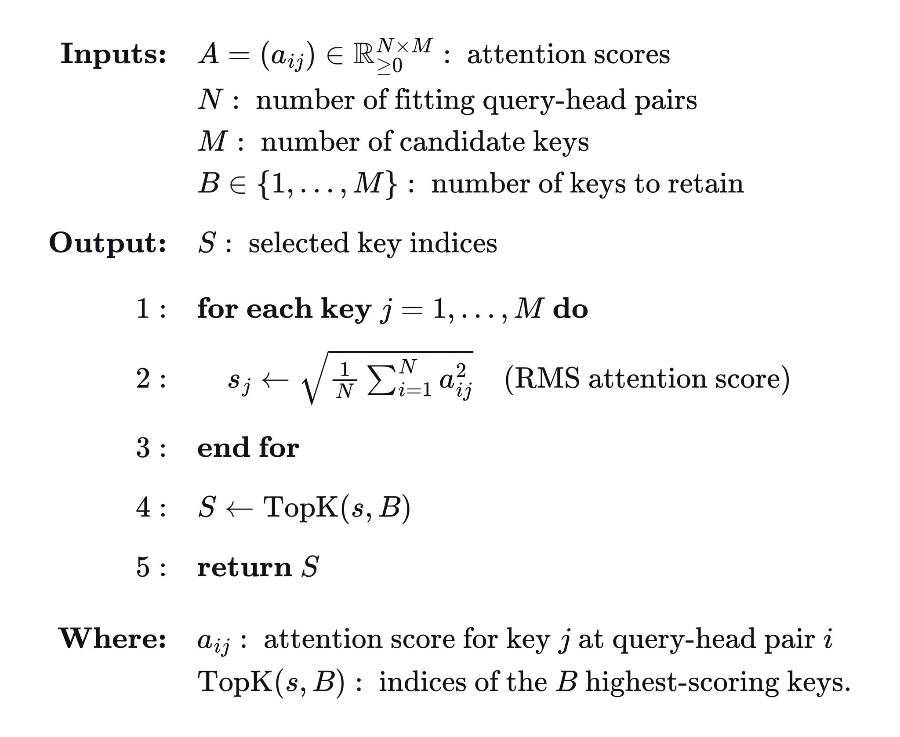
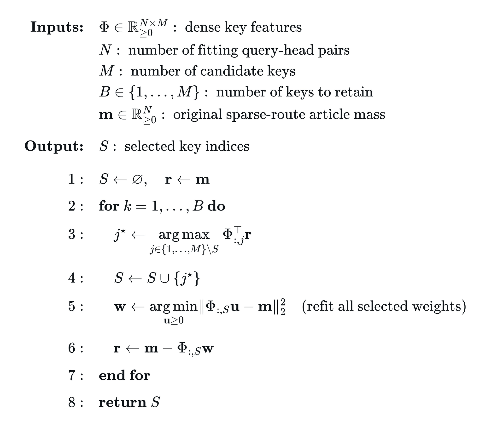
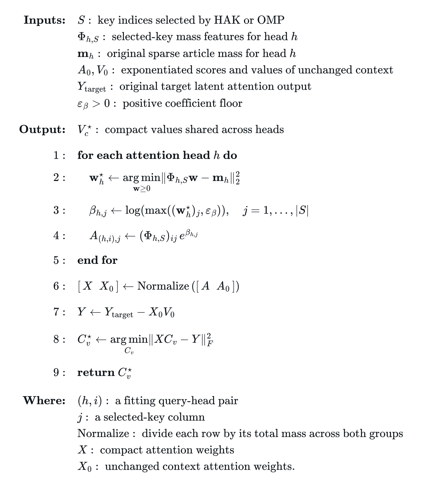

2026年成了AI token开支的拐点：人均月度AI开支中位数一年涨了165%。Ramp Labs开了一条新研究线，用KV缓存压缩从模型运行本身压成本。
他们把KVzip和Attention Matching从小型稠密模型搬到了GLM 5.3这样的大型稀疏前沿模型上。下文完整呈现稀疏注意力带来的三重挑战、两种方法的改造，以及KV缓存缩小80%还保留九成精度的实验数据。
2026年是AI token开支的拐点。从2025年8月到2026年8月，Ramp AI开支指数显示，人均月度AI开支中位数涨了165%，前10%涨了246%，前1%涨了198%。
Ramp做了Router来最大化每一美元开支换来的智能，把自家推理成本砍掉了约30%。但他们想把成本曲线再往下压，办法是从模型运行本身开刀，先从上下文的存储和使用方式下手。
这篇文章是Ramp Labs一条新研究线的开篇：用KV缓存压缩提升模型计算效率。
模型处理提示词时，会在每个注意力层算出键和值。推理服务器把这些张量存在KV缓存里，生成每个新token时复用，省掉重复计算。但缓存吃GPU显存和显存带宽，上下文一长，KV缓存经常比模型权重本身还大。
KV缓存压缩就是找一种更高效的表示，只保留模型真正需要的状态。如果能用更小的缓存表示同样的上下文且不掉任务质量，服务器就能在显存里塞更多并发请求，注意力算子花的带宽也更少。推理更便宜更快，输入输出token的服务成本都下降。
这项研究在文献里两种最有前景的方法上继续深挖。KVzip是一种快速压缩算法，用上下文重建提示给缓存条目打分，保留分数最高的N个，其余驱逐。它在KVPress榜单上领跑KV缓存压缩成绩。
Attention Matching则是计算量更大的压缩算法，构造一个更小的缓存，去逼近原缓存的注意力输出，以及它相对其他token的注意力份额。
除了算法上的新改进，研究还把这两个方法从原来的小型稠密注意力模型实现（比如Qwen3-8B）扩展到了大型稀疏注意力的前沿模型，先从GLM 5.3开刀。
这项研究的初衷，是找到能用在当今生产环境前沿模型架构上的改进。但KVzip和Attention Matching的实现都假设稠密注意力：每个查询能给所有符合条件的缓存位置打分，压缩可以在独立的键值头上操作。
现代架构打破了这些假设。GLM 5.3里，并非上下文中所有token都参与注意力。它用的是DeepSeek稀疏注意力（DSA），靠一个学出来的索引器为每个查询最多选2048个token位置去读，然后在模型的21个层分组里跨层复用选中的位置（这叫IndexShare）。这些token再用多头潜在注意力（MLA）做注意力计算，MLA用共享隐变量为每个头构建键和值。
这带来了几个新问题，KVzip和Attention Matching都得做针对性改造。第一，不同头对token位置的加权不一样，头之间存在关注点的分化。KVzip和Attention Matching在允许每个头、每层选不同token位置时效果最好，但在一个IndexShare分组里，所有头和层必须共用同一套保留token集合。简单粗暴地在分组里取最大分，会让少数高分头霸占预算，把别的头需要的上下文丢掉。
第二，稀疏注意力只给索引器选中的位置打分。一个没有观测到注意力的位置，可能是被路由排除了，而不是被判定为不重要。DSA被训练成选中和当前查询相关的token位置，这和我们想选中最能代表原始上下文的token的目标可能冲突。
第三，GLM的共享隐变量要求新的选择方法，来处理驱逐一个MLA条目时可能产生的跨头负面影响。而在标准多头注意力里，每个头的键和值是相互独立的。
KVzip靠让模型重建上下文来估计重要性。做法是把模型teacher-force到正确答案上：把上下文复制一份拼成助手消息做预填充，看第一份拷贝里哪些位置收到了注意力。
对模型上下文X，临时打分请求的格式是X拼接X。第二份拷贝提供查询向量，用来产生打分用的注意力概率。打分这一遍用稠密注意力，让每个位置都能被打分。对层l、头h、原始位置t，记录该位置收到的最大稠密注意力概率。取最大值的含义是，只要某个位置对任意重建查询重要，就给它记上一功。78层全部用稠密注意力算分，保证每个符合条件的位置都被考虑到。
s(l,h,t) = max_q a(l,h,q,t)GLM 5.3版KVzip生成一个共享掩码，阻止被驱逐的位置再被DSA索引器选中。设G是一个IndexShare分组里全部层头对的集合，B是该分组的保留token预算。原始的最大值选择器按每个位置在G里拿到的最高分排序，保留前B个。保留高分位置的目标，是高效地维持原始未压缩上下文的注意力模式。
r_G^max(t) = max_{(l,h) in G} s(l,h,t)先在ComplexMCP上测了原始最大值选择器：29807个token的前缀（含314个工具定义），47个任务，跑3轮，结果如下表。
| 缓存压缩率 | 保留的前缀token数 | 平均严格准确率 |
|---|---|---|
| 0% | 29,807 | 63.8% ± 4.6pp |
| 10% | 26,826 | 62.4% ± 2.7pp |
| 30% | 20,864 | 59.6% ± 0.0pp |
| 50% | 14,903 | 53.9% ± 4.4pp |
原始最大值选择器的毛病是少数高分头主导选择，别的头的有用上下文留不下。于是试了把同一份共享预算分得更均匀，能不能保留更多重建信号。
第一种叫归一化最大值。每个层头对先把分向量除以它在全部前缀位置上的总和，得到归一化分数p，削弱头之间总分量级差异的影响，再在IndexShare分组里按p的最大值排序。
p(l,h,t) = s(l,h,t) / sum_u s(l,h,u)r_G^{norm max}(t) = max_{(l,h) in G} p(l,h,t)第二种叫对数覆盖度，让选择依赖于已经保留的位置。对每个层头对，定义覆盖度cov为保留集合S上归一化分数的和，贪心地每次加入让全组对数覆盖度和增量最大的位置。对数函数让改善一个覆盖得很差的头比改善一个已经覆盖很好的头奖励更大。用eps=1e-6保证零覆盖时目标函数也有定义。受保护的初始位置计入S，也占预算B。
cov(l,h)(S) = sum_{t in S} p(l,h,t)F_G(S) = sum_{(l,h) in G} log(cov(l,h)(S) + eps)在30%压缩率、同一份重建分数上对比三种选择器。层头对的分数覆盖度指它重建总分里在驱逐后存活的比例，近似衡量压缩上下文对未压缩上下文的还原程度。平均分数覆盖度是对全部层头对取平均，最小头覆盖度是所有层头对里最低的那个。最小值能暴露被共享掩码大量丢弃有用上下文的头，而平均值会掩盖它。选择时间只算掩码选择，不含共用的199.775秒分数捕获。
| 选择器 | 平均分数覆盖度 | 最小头覆盖度 | 选择时间 |
|---|---|---|---|
| 原始最大值 | 86.4% | 49.5% | 0.471秒 |
| 归一化最大值 | 88.9% | 69.6% | 0.572秒 |
| 对数覆盖度 | 90.0% | 63.1% | 50.744秒 |
覆盖度好看不等于任务精度高。又在47个ComplexMCP任务上实测三种选择器，固定30%压缩率，每种跑3轮，看严格任务准确率和工具调用数。
归一化最大值拿了最高的平均严格准确率60.3%，比原始最大值高5.0个百分点，比对数覆盖度高4.3个百分点。它的最小头覆盖度也是最高的69.6%，尽管平均覆盖度不如对数覆盖度。
结论很直白：保护覆盖最差的头，比把平均重建分数刷高更重要。漂亮的平均数会掩盖个别头的惨重损失。
| 选择器 | 平均每轮工具调用 | 平均严格准确率 |
|---|---|---|
| 原始最大值 | 532.7 ± 20.7 | 55.3% ± 3.0pp |
| 归一化最大值 | 548.7 ± 13.0 | 60.3% ± 2.7pp |
| 对数覆盖度 | 557.3 ± 31.5 | 56.0% ± 5.0pp |
换KVzip的选择器只改变哪些条目存活，键和值本身不动。Attention Matching再往前走一步：选出一小批键之后，拟合新的注意力偏置和值，让保留的条目能替被丢弃的token扛下它们的贡献。
拟合沿用论文《Fast KV Compaction via Attention Matching》3.2节的两阶段回归。第一阶段给每个保留键拟合权重，匹配原始上下文的注意力总量，保住上下文相对后续token的贡献强度。A是保留键的指数化查询键分数，m是原始注意力总量，beta提供注意力偏置。一个小的正数下限eps避免对零取对数。
w* = argmin_{w>=0} ||Aw - m||^2, beta = log(max(w*, eps))偏置固定后，第二阶段回归拟合新的值去复现原始注意力输出。X是紧凑缓存的归一化注意力权重，Y是原始输出，都在拟合查询上求值。两阶段合起来，用更小的KV缓存逼近大缓存产生的注意力模式。
C_v* = argmin_{C_v} ||X C_v - Y||^2_F搬到GLM 5.3上时，每层要在64个查询头之间共享一套576维隐键和512维隐值。对每个头h和保留键j单独拟合系数w，它的对数变成注意力偏置，在归一化前缩放该键的贡献。系数为2就让该键对该头的未归一化贡献翻倍。不同头可以给同一个保留条目赋不同重要性。偏置固定后，跨头联合拟合共享的值，物理上始终只有一份KV缓存。
beta(h,j) = log(max(w*(h,j), eps_beta))给隐缓存做Attention Matching，每层走三步：先选保留哪些键，再拟合它们的权重和值。
第一步，选共享键集合。两种选键方法。HAK（最高注意力键选择）按拟合查询上的RMS注意力分数给原始键排序，取Top B。下图是HAK算法伪代码。

OMP（正交匹配追踪）增量式构建集合，每次选一个最能解释当前集合没覆盖住的注意力总量的键，再把已选键的权重一起重拟合。下图是OMP算法伪代码。

第二步，拟合保留条目。对选中的键拟合各头系数复现原始文章的注意力总量，系数的对数变成加性注意力偏置，再拟合共享隐值复现原始注意力输出。键还是原来选中的键，但新的权重和值能替被丢弃的条目扛贡献。下图是权重与数值拟合算法。

第三步，用on-policy查询拟合。压缩前面的层会改变传给后面层的残差流，后面层的查询就和未压缩模型产出的不一样了。按论文3.1节逐层顺序构建：拟合每一层之前，先用前面已压缩的层重跑拟合序列，抓当前层的查询，再用这些on-policy查询选键和拟合，缩小构建缓存与推理时的失配。
在QuALITY上测，这是一个用长文章上下文做问答的基准。压缩每篇文章的KV缓存，聊天模板、问题和选项不压缩。
5篇文章、跑4轮：95%压缩率下，Attention Matching加HAK平均73.7%准确率，KVzip基线67.8%。OMP在95%压缩率下77.8%，90%下81.8%，80%下83.9%。95%压缩率下HAK和OMP的差距平均是90道题里差4道，但OMP选择耗时长得多。
同预算下拟合明显胜过单纯驱逐，但都没追上未压缩的91.8%。
| 条件 | 缓存压缩率 | 准确率 | 平均选择时间(每篇) |
|---|---|---|---|
| 完整文章上下文 | 0% | 91.8% ± 0.6pp | ： |
| 无文章上下文 | 0% | 53.3% ± 1.1pp | ： |
| KVzip加HAK选择 | 95% | 67.8% ± 1.7pp | ： |
| Attention Matching加HAK | 95% | 73.7% ± 1.1pp | 3.51秒 |
| Attention Matching加OMP | 95% | 77.8% ± 1.9pp | 21.49秒 |
| Attention Matching加OMP | 90% | 81.8% ± 1.5pp | 69.06秒 |
| Attention Matching加OMP | 80% | 83.9% ± 1.2pp | 256.95秒 |
为了测Attention Matching的上限，又跑了一组oracle查询：查询直接用被测题目的变体。
聚焦任务的查询全面抬升了准确率，说明查询引导对压缩KV缓存的可用性影响巨大。
| 条件 | 缓存压缩率 | 重复预填充准确率 | Oracle准确率 |
|---|---|---|---|
| Attention Matching加HAK | 95% | 73.7% ± 1.1pp | 88.89% |
| Attention Matching加OMP | 95% | 77.8% ± 1.9pp | 88.89% |
| Attention Matching加OMP | 90% | 81.8% ± 1.5pp | 87.78% |
上面的Attention Matching改造还依赖注意力分数。团队想更直接地利用GLM 5.3的原生稀疏性，用模型自己的选择机制，也就是DSA那个学出来的索引器。索引器本来就在预测每个查询该看哪些token位置，假设它的分数也能指出压缩缓存该保留哪些条目。
验证办法是把HAK和OMP选键时的注意力分数换成索引器分数。每个查询先在全部可用位置上归一化分数，再用文章位置的分数选保留键。同样在5篇文章90道题上测。
索引器确实提供了关于保留哪些条目的有用信息，把索引器分数整合进KV缓存压缩算法值得继续深挖。
| 条件 | 缓存压缩率 | 准确率 |
|---|---|---|
| 完整上下文 | 0% | 92.2% |
| 无上下文 | 0% | 57.8% |
| Attention Matching加HAK(索引器分数) | 95% | 73.3% |
| Attention Matching加OMP(索引器分数) | 95% | 77.0% |
| Attention Matching加OMP(索引器分数) | 90% | 81.1% |
参考：https://x.com/RampLabs/status/2104634941405266021